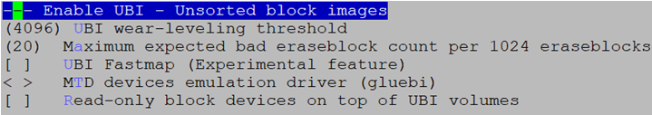

前言
前言
linux-2.6.27后，内核加入了一种新型的FLASH文件系统UBI (Unsorted Block Images)。主要针对FLASH的特有属性，通过软件的方式来实现日志管理、坏块管理、损益均衡等技术。
本文主要介绍如何在内核中配置使用UBI文件系统以及制作对应的UBI文件系统根文件系统镜像。同时还介绍了如何转换镜像格式以便于在u-boot上进行烧录。
与本文档相对应的产品版本如下。
本文档（本指南）主要适用于技术支持工程师。
在本文中可能出现下列标志，它们所代表的含义如下。


内核中使能UBI
须知：
本文档中以单板上的内核版本linux5.10.y为例，使用 UBIFS 文件系统，可以按以下配置。
内核配置UBI选项
使能UBI设备驱动
Device Drivers --->
<*> Memory Technology Device (MTD) support --->
<*> Enable UBI - Unsorted block images --->

说明：
必须先使能UBI设备驱动，才能找到UBIFS文件系统选项。
使能UBIFS文件系统
所有配置按以上图中所示, 其它 UBI/UBIFS 配置选项使用系统默认值, 不要随意选择配置, 如果选择不慎, UBI 文件系统可能无法正常工作。
UBI 设备驱动配置选项说明
-
UBI wear-leveling threshold
UBI 系统记录每个擦除块发生擦除操作的次数。此选项表示所有擦除操作次数中, 最小值和最大值之间允许的最大间隔。此值默认为4096，对于寿命比较短的 MLC 器件，此值应该配置相对小一点，比如256。
-
MTD devices emulation driver (gluebi)
模拟MTD驱动，选择此选项，当创建一个卷时，UBI 将同时模拟一个 MTD设备。这个功能提供了一个接口，供其它文件系统使用UBI。
UBIFS 应用样例
mount 一个空 UBIFS 文件系统
单板在uboot下配置环境变量时，需要多划分一个ubi分区作为文件系统升级分区。
示例：单板当前有5个分区，分区的情况如下。
## cat /proc/mtd
dev: size erasesize name
mtd0: 01000000 00020000 "boot"
mtd1: 00100000 00020000 "atf"
mtd2: 00d00000 00020000 "kernel"
mtd3: 02000000 00020000 "rootfs"
mtd4: 04000000 00020000 "ubi"
通过以下几步, 就可以把mtd4分区映射成ubi卷，做为 ubi 分区使用。
-
使用以下命令格式化 ubi 分区。
说明：
- boards/dmeb目录下编译完成后，生成的UBI工具放在boards/dmeb/pub/bin/board_xxx/目录下，board_xxx路径的命名与编译时选择的工具链以及产品相关。
- 需将UBI工具下载到单板，通过命令“chmod +x ‘ubi工具’”加可执行权限。
- 不推荐擦除(如:用命令 flash_eraseall )分区, 擦除分区后，可以正常 mount 到 ubifs。 但是擦除分区操作, 将使UBI系统丢失记录的每个擦除块的擦除次数。 -
绑定 UBI到MTD分区
绑定 UBI 到 mtd4 分区，使用以下命令。
参数”-m 4”表示使用 mtd4 分区，“-b n”表示保留n个块用于坏块处理。只有绑定了ubi 到 mtd 分区以后，才能在 /dev/ 下找到 ubi设备“ubi1”。
说明：
因为内核启动过程中首次绑定到mtd3，已经创建设备“/dev/ubi0”，对应卷标“/dev/ubi0_0”,所以当绑定到mtd4以后，会自动创建另外一个设备“/dev/ubi1”,对应卷标“/dev/ubi1_0”,如果内核从mtd4启动，此时ubi 设备编号会从 0 开始。命令执行成功, 显示信息如下。
# ubiattach /dev/ubi_ctrl -m 4 UBI: attaching mtd4 UBI: scanning is finished UBI: attached mtd4 (name "ubi", size 64 MiB) UBI: PEB size: 131072 bytes (128 KiB), LEB size: 126976 bytes UBI: min./max. I/O unit sizes: 2048/2048, sub-page size 2048 UBI: VID header offset: 2048 (aligned 2048), data offset: 4096 UBI: good PEBs: 511, bad PEBs: 0, corrupted PEBs: 0 UBI: user volume: 0, internal volumes: 1, max. volumes count: 128 UBI: max/mean erase counter:19/11, WL threshold: 4096, image sequence number: 1841457603 UBI: available PEBs: 488, total reserved PEBs: 44, PEBs reserved for bad PEB handling: 40 UBI: background thread "ubi_bgt1d" started, PID 1201 UBI device number 1, total 511 LEBs (64884736 bytes, 61.8 MiB), available 488 LEBs (61964288 bytes, 59.0 MiB), LEB size 126976 bytes (124.0 KiB)最后一行打印“ubi_bgt1d”表示成功创建设备ubi1，查看所有设备“ls /dev/ubi*”，将发现多一个设备“/dev/ubi1”。
-
创建 UBI 卷
UBI卷可以理解为UBI设备的分区。创建 ubi 卷命令如下：
命令参数含义如表1所示。
表 1 参数含义 (1)
说明：
- SIZE值应小于“/dev/ubi1”设备能提供的空间大小。
- 可以使用命令“ubinfo”查看当前可使用的LEBs大小。当UBI设备提供的空间为50 MiB时，可使用的空间大小为43.1MiB。所以，应该保证所创建的卷的SIZE值小于可使用的LEBs空间大小。# ubinfo /dev/ubi1 Ubi1 Volumes count: 1 Logical eraseblock size: 126976 bytes, 124.0 KiB Total amount of logical eraseblocks: 511 (64884736 bytes, 61.8 MiB) Amount of available logical eraseblocks: 75 (9523200 bytes, 9.0 MiB) Maximum count of volumes 128 Count of bad physical eraseblocks: 1 Count of reserved physical eraseblocks: 19 Current maximum erase counter value: 1 Minimum input/output unit size: 2048 bytes Character device major/minor: 249:0 Present volumes: 0从上面打印信息可知，参数Total amount of logical eraseblocks: 后对应值即为卷/dev/ubi1的总大小。
故如需创建50MiB大小的ubi卷，可使用以下命令：
此时再查看所有设备“ls /dev/ubi*”, 将发现多一个设备“/dev/ubi1_0”。
说明：
针对某一个mtd分区，卷只用创建一次，创建后，卷信息将被记录在UBI设备上，下一次启动，不用再次创建卷。删除卷，用命令 “ubirmvol”. 如果使用此命令删除卷，卷上所有数据，也将被删除。 -
挂载空UBIFS文件系统
此时就可以将创建的卷挂载到指定的目录上去了，命令如下：
参数“/dev/ubi1_0”表示mount到卷 “ubi1_0”，也可以使用参数“ubi1:ubifs”。某些版本的内核，不支持“/dev/ubi1_0”形式的参数，只能使用“ubi1:ubifs”形式的参数. “ubi1:ubifs”中的“ubifs”表示卷的名称, 在创建ubi卷时设置。
Mount 成功，将显示如下信息：
# mount -t ubifs /dev/ubi1_0 /mnt/ UBIFS (ubi1:0): default file-system created UBIFS (ubi1:0): background thread "ubifs_bgt1_0" started, PID 1225 UBIFS (ubi1:0): UBIFS: mounted UBI device 1, volume 0, name "ubifs" UBIFS (ubi1:0): LEB size: 126976 bytes (124 KiB), min./max. I/O unit sizes: 2048 bytes/2048 bytes UBIFS (ubi1:0): FS size: 43933696 bytes (41 MiB, 346 LEBs), journal size 2158592 bytes (2 MiB, 17 LEBs) UBIFS (ubi1:0): reserved for root: 2075096 bytes (2026 KiB) UBIFS (ubi1:0): media format: w5/r0 (latest is w5/r0), UUID D2E4E92D-2F7D-412F-95E5-25CBECF172EB, small LPT model查看分区信息，将显示如下内容：
# df -h Filesystem Size Used Available Use% Mounted on ubi0:ubifs 44.5M 20.0K 42.1M 0% /mnt devtmpfs 58.0M 0 58.0M 0% /dev由于UBIFS文件系统自身管理开销，日志占用，root区域保留，导致显示的分区大小比创建的空间要小，显示空间大小为FS size 减去journal size和reserved for root后的值。但UBIFS文件系统保存的是文件压缩后的内容，实际存储文件能力要比所显示的可用空间要大，压缩比率与文件内容相关。例如可能剩余空间显示只有2M, 但是可以将一个4M的文件完整保存。
制作 UBIFS 根文件系统UBI镜像
制作 ubifs 文件系统镜像，需要使用mtd-utils工具，命令如下：
命令参数含义如表1所示。
表 1 参数含义 (2)
表示将要被制作为UBIFS镜像的根目录为“rootfs_uclibc”, 这个参数也可以写为 “-r rootfs_uclibc”。 |
|
表示最小读写单元是 2KiB，这个参数也可以写为“-m 2048”。这里使用的NAND芯片页大小为2KiB。最小读写单元是指FLASH器件一次读写操作, 最小操作的字节数，对NAND器件，是页大小，如2K/4K/8K；对于NOR器件，是1个字节。 |
|
最小读写单元和逻辑擦除块大小可以通过读MTD和UBI系统信息获得，也可以通过计算获得。读MTD信息命令以及显示内容如下：
## mtdinfo /dev/mtd4
mtd4
Name: ubi
Type: nand
Eraseblock size: 131072 bytes, 128.0 KiB
Amount of eraseblocks: 512 (67108864 bytes, 64.0 MiB)
Minimum input/output unit size: 2048 bytes
Sub-page size: 2048 bytes
OOB size: 60 bytes
Character device major/minor: 90:6
Bad blocks are allowed: true
Device is writable: true
读UBI信息命令（此命令需要先绑定UBI见4）以及显示内容如下：
## ubinfo /dev/ubi1
ubi1
Volumes count: 1
Logical eraseblock size: 126976 bytes, 124.0 KiB
Total amount of logical eraseblocks: 511 (64884736 bytes, 61.8 MiB)（表示此芯片的逻辑擦除块大小）
Amount of available logical eraseblocks: 0 (0 bytes)
Maximum count of volumes 128
Count of bad physical eraseblocks: 0
Count of reserved physical eraseblocks: 40
Current maximum erase counter value: 20
Minimum input/output unit size: 2048 bytes
Character device major/minor: 249:0
Present volumes: 0
逻辑擦除块大小也可以通过计算得到，计算方法如表2所示。
表 2 逻辑擦除块大小的计算方法
Blocksize: flash 物理擦除块大小
Pagesize: flash 读写页大小
以下为制作成功后, “mkfs.ubifs”的详细打印。
$ ./mkfs.ubifs –F -d rootfs_uclibc -m 2KiB -o rootfs.ubiimg -e 126976 -c 256 -v
mkfs.ubifs
root: rootfs_uclibc/
min_io_size: 2048
leb_size: 126976
max_leb_cnt: 256
output: rootfs.ubiimg
jrn_size: 3936256
reserved: 0
compr: lzo
keyhash: r5
fanout: 8
orph_lebs: 1
space_fixup: 1
selinux file: (null)
super lebs: 1
master lebs: 2
log_lebs: 4
lpt_lebs: 2
orph_lebs: 1
main_lebs: 42
gc lebs: 1
index lebs: 1
leb_cnt: 52
这里需要注意, 制作成功的UBIFS根文件系统镜像为 UBI镜像，可以在内核下对空UBIFS文件系统进行升级（update）操作，详见“空UBIFS文件系统升级为根文件系统”。
该镜像不能直接烧录到MTD分区上使用，但是可以通过格式转换,转换成能直接烧录MTD分区上的格式。详见“UBI镜像的转换格式和烧录”。
做 UBI 镜像需要专用工具和内核版本必须搭配使用，UBI工具版本号和单板内核版本如果不配套,制作的镜像无法在单板上mount。
空UBIFS文件系统升级为根文件系统
在内核(区别u-boot)下建立好UBI卷后, 可以使用应用程序, 直接对卷进行升级。升级步骤如下：
- 创建UBI卷，详见3。
- 制作 UBIFS 根文件系统UBI镜像，详见 “制作 UBIFS 根文件系统UBI镜像”。
-
tftp下载根文件系统UBI镜像到内核
-
在内核下升级 UBIFS 文件系统，使用以下命令：
参数“/dev/ubi1_0”表示需要升级的卷，这个卷需要预先创建, 升级前, 卷上的内容可以不用擦除。
清除卷内容，使用命令“ubiupdatevol /dev/ubi1_0 -t”。
在执行这一步之前，如果执行了2.1的4，需要先umount /mnt，将创建的卷释放出来，才能执行该步骤。
-
设置u-boot启动参数
UBIFS 下 u-boot的启动参数bootargs配置形式如下（仅为示例，具体按照实际项目来修改配置）：
setenv bootargs 'mem=128M console=ttyAMA0,115200 clk_ignore_unused root=ubi0:ubifs rootfstype=ubifs rw ubi.mtd=4 mtdparts=nand:512K(boot),512K(env),4M(kernel),32M(rootfs),64M(ubi)'; sa命令参数含义如表1所示。
表 1 参数含义 (3)
表示UBI绑定到“/dev/mtd4”分区，通过内核打印信息可确认加载的根文件系统是否为mtd4分区的ubifs。
“ubi0”表示使用UBI绑定后的UBI分区, 其中“ubifs”为创建UBI卷时定义的卷名。某些内核版本不识别“root=/dev/ ubi0_0”形式的参数。
UBI镜像的转换格式和烧录
- 制作 UBIFS 根文件系统UBI镜像，详见“制作 UBIFS 根文件系统UBI镜像” 。
-
制作 UBI 镜像转换配置文件
UBI镜像转换格式时, 需要创建一个配置文件ubi.cfg作为第（3）步的输入。内容如下所示：
[ubifs-volumn] mode=ubi image=./rootfs_xxxx_2k_128k_32M.ubiimg vol_id=0 vol_type=dynamic vol_alignment=1 vol_name=ubifs vol_flags=autoresize命令参数含义如表1所示。
表 1 参数含义 (4)
表示卷对应的 UBIFS 文件系统镜像文件名称，此文件即“制作 UBIFS 根文件系统UBI镜像”。
表示卷的ID号, UBI镜像可能包含多个卷, 这个用来区别不同的卷。
表示当前卷类型是可读写的。如果此卷为只读，对应的参数应该为“vol_type=static”；
表示卷的名称, UBIFS 做根文件系统时, 将用到卷名称。
-
转换UBI镜像格式， 使用以下命令：
命令参数含义如表2所示。
表 2 参数含义 (5)
输出的UBI镜像转换后的名称为“rootfs.ubifs”，输入的UBI镜像文件名由ubi.cfg配置文件输入。
flash的擦除块大小。注意这是物理擦除大小, 不是逻辑擦除块大小。
以下为制作成功后的详细打印。
$ ./ubinize -o rootfs.ubifs -m 2KiB -p 128KiB ubi.cfg -v ubinize: LEB size: 126976 ubinize: PEB size: 131072 ubinize: min. I/O size: 2048 ubinize: sub-page size: 2048 ubinize: VID offset: 2048 ubinize: data offset: 4096 ubinize: UBI image sequence number: 2067745235 ubinize: loaded the ini-file "ubi.cfg" ubinize: count of sections: 1 ubinize: parsing section "ubifs-volumn" ubinize: mode=ubi, keep parsing ubinize: volume type: dynamic ubinize: volume ID: 0 ubinize: volume size was not specified in section "ubifs-volumn", assume minimum to fit image "./rootfs_xxxx_2k_128k_32M.ubiimg"6983680 bytes (6.7 MiB) ubinize: volume name: ubifs ubinize: volume alignment: 1 ubinize: autoresize flags found ubinize: adding volume 0 ubinize: writing volume 0 ubinize: image file: ./rootfs_xxxx_2k_128k_32M.ubiimg ubinize: writing layout volume ubinize: done -
U-BOOT 下 ubi 镜像转换文件的烧写
U-BOOT 下，烧写UBI镜像转换文件和烧写内核的方法一样。 命令如下所示：
# nand erase [offset] [len] # mw.b [ddr_addr] 0xff [len] # tftp [ddr_addr] rootfs.ubifs # nand write [ddr_addr] [flash_start_addr] [ubi_len] 说明：
- offset即进行flash操作的开始地址，例nand erase 0x800000 0x720000，即flash从8MB开始擦除，擦除7296KB长度。
- len是UBIFS根文件系统分区大小长度。
- ddr_addr即内存地址，要选用可使用的ddr地址进行操作，否则可能会造成系统挂死。具体项目ddr地址请参考《Hi35xxVxxx U-boot 移植应用开发指南》中烧写方法。
使用mkubiimg.sh脚本一键式制作UBI镜像
针对mount 一个空 UBIFS 文件系统至UBI镜像的转换格式和烧录繁琐的UBI镜像和UBIFS根文件系统镜像制作步骤，在boards/dmeb/tools/pc/ubi_sh/目录下提供了mkubiimg.sh脚本，专门用于制作无子页Nand Flash使用的UBI镜像和UBIFS根文件系统镜像。
使用以下命令：
参数说明：
Chip. 产品名称：如xxxx
Pagesize NAND page size. 2k/4k/8k.
Blocksize NAND block size. 128k/256k/1M
Dir 将要被制作为UBIFS镜像的根目录
Size UBIFS根文件系统分区的大小.
Tool_Path 制作UBI镜像所需mkfs.ubifs和ubinize工具的存放目录，一般放于osdrv/pub/bin/pc/目录
Res 是否保留UBI镜像和ubicfg配置文件 (1:Yes 0:No(默认))
举个例子，执行完命令：./mkubiimg.sh xxxx 2k 128k osdrv/pub/rootfs 50M osdrv/pub/bin/pc 1
之后会生成三个文件：
- rootfs_xxxx_2k_128k_50M.ubiimg：该镜像不能直接烧录到MTD分区，但是可以使用ubiupdate命令在内核下对空UBIFS文件系统进行升级操作，详见“空UBIFS文件系统升级为根文件系统 ”。
- rootfs_xxxx_2k_128k_50M.ubicfg：UBI镜像转换格式时, 需要一个配置文件。这个配置文件主要指明根文件系统的卷名，卷类型和扩展属性等内容。
- rootfs_xxxx_2k_128k_50M.ubifs：该镜像可以直接烧录到Nand Flash，是.ubiimg转换格式的最终镜像。
附录
UBI 和 MTD 相关的接口和命令
UBI 和 MTD 相关的接口和命令含义如表1所示。
表 1 命令含义
UBI常见问题
-
为什么第一次能mount上ubifs，重启以后会挂载失败?
在内核版本在3.0以上，需要在制作UBIFS根文件系统UBI镜像的时候，增加“-F”参数，这个参数会设置修正空白区域的标志，在第一次mount的时候对空白区域进行修正，以便后续能正常使用。
-
为什么对UBI分区进行裸写操作后，下次重启后直接执行attach命令会出现ECC报错？
UBIFS对分区数据格式有严格要求，若对分区进行了裸写操作会破坏数据的格式。所以下次如果想要执行attach命令，必须先执行ubiformat（或flash_erase）命令，格式化分区，裸写后进行UBI操作必须先擦除。
-
为什么当MTD分区较小时 ubiattach 工具不使用 –b 选项会失败，如果使用 –b 选项怎么确定 –b 选项的值？
基于flash 构建 UBI 或 UBIFS需要保留一定的块用于坏块处理。内核默认的保留总块数的 1.9% 个块用于坏块处理（CONFIG_MTD_UBI_BEB_LIMIT 选项设置）。当绑定 UBI到 MTD 分区时内核按照chipsize的大小保留块导致该MTD分区空间不足而失败，因此当分区较小时我们需要使用 –b 选项并按照mtdsize的大小指定保留的用于坏块处理的块的数量，具体操作可参考以下公式： n=(mtdsize/eraseblock)* 1.9%
-
如何适当增加根文件系统容量？
由于内核加载ubifs根文件系统，ubiattach参数由CONFIG_MTD_UBI_BEB_LIMIT参数配置，默认比例为每1024个块保留20个,默认总数为flash chip总块数，如果需要适当提升根文件系统容量，可以按MTD实际块数重新配置参数, 具体操作可参考以下公式：CONFIG_MTD_UBI_BEB_LIMIT = (mtdsize/eraseblock)* 1.9%